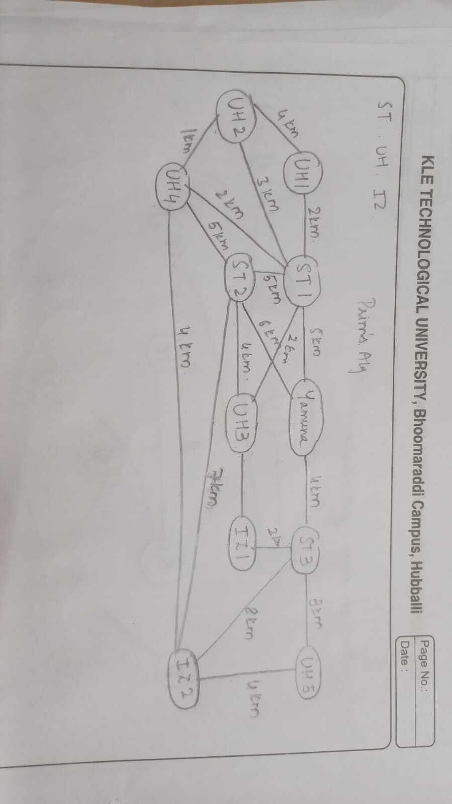

Target: 11.6
Indicator: 11.6.1
Shyamora’s water supply system is designed to ensure everyone has access to clean water. The main water source is the Yamuna River, and the system includes smart water tanks to help distribute water efficiently. Our goal is to provide all households and industrial areas with fair access to water, supporting Shyamora’s vision of a sustainable urban environment.
| Component | Quantity |
|---|---|
| Primary Water Source | 1 |
| Smart Water Tanks | 3 |
| Urban Households Served | 5 |
| Industrial Zones Served | 2 |
Fig 1: Water Supply Network Overview
To create an efficient water distribution plan for Shyamora, we use Prim's algorithm, which efficiently finds the minimum spanning tree, ensuring all parts of the water supply network are connected at the lowest cost. This method helps us connect all the important parts of our water system while keeping costs low. We also consider the distances as costs between each component to ensure the best connections.
You can find the code used for Prim's algorithm HERE (link to Prim's code). This code is efficient, with a performance of O(E log V), which helps us manage the water distribution network effectively.
Target: 11.6
Indicator: 11.6.1
Water scheduling is required to optimize the water distribution system. The city of Shyamora consists of various zones like industrial, residential, and agricultural that require water at different times throughout the day. The goal is to manage the water supply in such a way that the demand for water from these zones is met while minimizing wastage and ensuring that no zone experiences water shortages.
To solve this, we will use the sliding window technique which is often used to optimize problems where we need to consider a fixed-size window of data and slide through the data to find optimal solutions. In the context of water usage scheduling, this technique helps in efficiently managing the time slots and distributing water among different zones.
Implementation: First, we will collect water demands for each zone at various time intervals. Then, we will iterate over the time slots, maintaining a sliding window that adjusts the allocation of water based on the current demand within that window. Ensure that the total water allocated within the window is within the available supply. If the total demand exceeds the supply, adjust the water distribution by reducing the allocation to zones with lower priority (e.g., residential zones may have a lower priority than agricultural zones).
You can find the code for efficient water scheduling HERE (link to scheduling code).
Target: 11.5
Indicator: 11.5.2
The water distribution system in Shyamora has various pipelines connecting reservoirs, industrial zones, and farmlands. Each pipeline has a certain capacity for water flow, and it is important to analyze the traffic (i.e., water flow) through the pipelines to ensure that no part of the pipeline network gets congested.
To implement this, we will use level order traversal to analyze the flow of water through different components of the pipeline network. By representing the pipeline network as a tree or graph, we can use level order traversal (also known as Breadth-First Search (BFS)) to evaluate how water flows from the source (dam) to the farthest zones, step by step, level by level .
First, we will create a tree structure where its nodes represent components of the pipeline system and edges represent the flow of water. Then, we will traverse line by line, monitoring water flow and checking pipeline capacity. If the pipeline exceeds its flow capacity, we will take action by rerouting the water or optimizing the flow distribution. You can find the code for water traffic flow analysis HERE (link to flow analysis code).